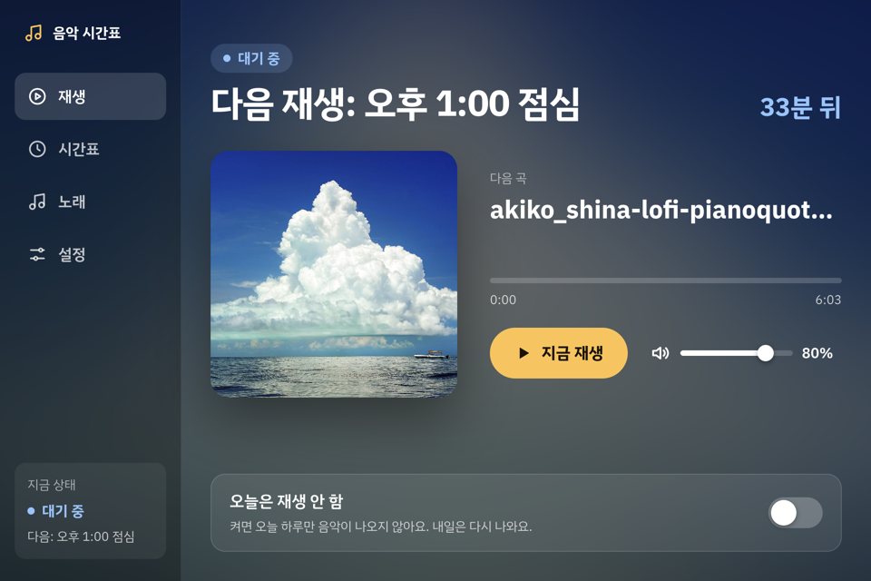

음악 시간표 사용 설명서
정해진 시간(등교·점심·하교)이 되면 음악이 저절로 나오고 저절로 멈춥니다. 평일에만 나오고, 주말·공휴일은 쉽니다.

꼭 기억할 것: 숨길 때는 –, X는 종료
| 버튼 | 하는 일 |
|---|
| – (창 오른쪽 위) | 창만 숨겨요. 음악은 정해진 시간에 그대로 나와요. |
| X (창 오른쪽 위) | 프로그램이 꺼져요. 정해진 시간에 음악이 나오지 않아요. |
실수로 X를 눌렀다면 바탕화면의 "음악 시간표" 아이콘을 눌러 다시 켜 주세요. PC를 다시 켜도 저절로 켜져요.
화면 둘러보기 (왼쪽 탭)
- 재생: 지금 상태와 다음 재생 시간이 보여요. [정지]·[지금 재생]으로 직접 끄고 켤 수 있어요.
- 시간표: 음악이 나오는 시간과 쉬는 날을 정해요.
- 노래: 음악 파일을 넣고 목록을 봐요.
- 설정: PC 켜질 때 자동 실행을 켜고 끌 수 있어요.
노래 넣기·빼기
- 노래 탭을 눌러요.
- 음악 파일(mp3, wav, ogg, m4a)을 점선 상자 안으로 끌어다 놓아요. "N곡을 추가했어요"가 나오면 끝이에요.
- 빼고 싶을 때는 [폴더 열기]를 눌러 열린 폴더에서 파일을 지워요. 목록에서 바로 사라져요.
- 나오는 순서는 파일 이름 순서예요. 순서를 바꾸고 싶으면 파일 이름 앞에
01_, 02_처럼 번호를 붙여요.
시간 바꾸기
- 시간표 탭에서 시작·끝 칸에 시간을 적어요 (예:
08:30, 830도 돼요). - 시간이 겹치거나 잘못되면 빨간 글씨가 나와요. 고치면 [저장]을 누를 수 있어요.
- [시간 추가]로 새 시간을 만들고, 휴지통 버튼으로 지워요. 꼭 [저장]을 눌러 주세요.
쉬는 날
- 며칠 뒤 쉬는 날(임시공휴일, 행사 등): 시간표 탭 오른쪽 달력에서 그 날짜를 눌러요. 노란색이 되면 쉬는 날이에요. 다시 누르면 풀려요.
- 오늘만 급하게 끄기: 재생 탭 아래 "오늘은 재생 안 함"을 켜요. 내일은 저절로 다시 나와요.
- 주말과 공휴일(2027년까지)은 따로 정하지 않아도 쉬어요.
소리가 안 나요
- PC 볼륨이 꺼져 있거나(음소거) 너무 작은지 확인해요.
- 재생 탭 위쪽 글씨를 봐요. "오늘은 쉬는 날이에요"라면 쉬는 날이에요.
- 노래 탭에 노래가 있는지 확인해요.
- 그래도 안 되면 프로그램을 X로 껐다가 바탕화면 아이콘으로 다시 켜요.